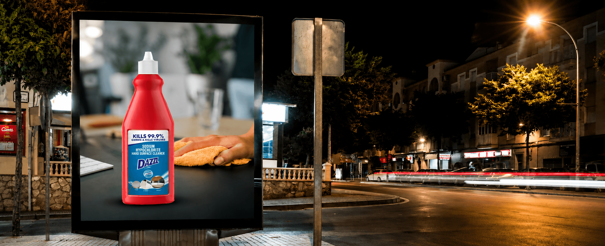
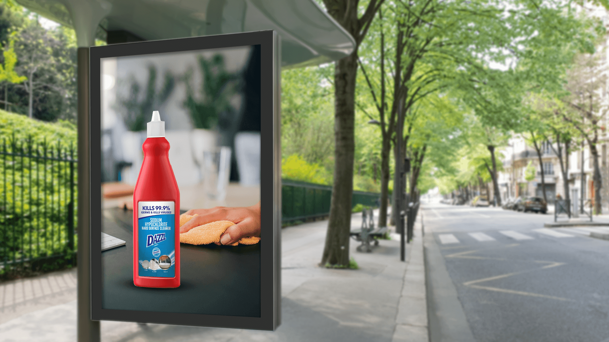

The work had to make this specialist hard-surface product distinct from general floor cleaners and aerosol sanitizers.
← Back to workHard surfaces.
Dazzl · Hard Surface Cleaner
Hard surfaces.
One direct defence.

Project overview
A specialist formula.
Made simple to understand.
Dazzl needed a product-led print expression for its sodium-hypochlorite hard-surface cleaner.
The creative turns product usage into a single familiar scene: the bottle leads, a wiping gesture proves the action, and the front label carries the performance claim and applicable surface cues.
- Deliverable
- Master Print
- Extension
- Outdoor
- Formula
- Sodium Hypochlorite
- Claim
- Kills 99.9% Germs & Viruses
The communication challenge
Technical enough to trust.
Simple enough to act on.
Formula, germ-kill claim and surface relevance needed a clean hierarchy that could be understood at a glance.
The creative idea
The bottle proves
what the hand begins.
A familiar wiping action makes the usage immediate. Placing the bottle in the foreground creates the product bridge, while its tall red silhouette stops the eye against a muted household setting.
The label is treated as communication, not decoration: claim first, product type second, surface cues third.
The reading order
See the action.
Read the proof.
Recognise
The red bottle creates immediate product distinction.
Understand
The wiping gesture establishes use without explanation.
Believe
The prominent germ-and-virus claim provides reassurance.
Apply
Surface icons indicate the product’s intended contexts.
The work in context
Product forward.
Clear from the street.
Both supplied applications are shown at their original ratio without cropping, keeping the bottle, action and complete label hierarchy visible.


The outcome
One product in focus.
One job understood.
The final print system makes a specialist hygiene proposition feel practical: a recognisable bottle, a familiar action and performance information that remains readable across placements.
Product distinction
The bottle and label lead every composition.
Usage clarity
The cleaning action explains the role immediately.
Visible reassurance
The performance claim remains central and legible.
Wipe the surface.Keep the confidence.
Need a specialist product made instantly clear?